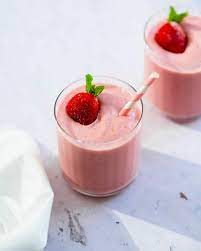

Strawberry Smoothie Recipe

Description
Waffle is the perfect dish if you've got a sweet tooth. It is suitable as breakfast, desert or snack. Here is the recipe for the perfect fluffy on the inside and crispy on the outside waffle recipe.
Ingredients
- 1 (6 ounce) container low-fat strawberry yogurt
- ¾ cup low-fat milk
- ½ cup frozen strawberries
- ¼ cup ground oats
- 1 teaspoon flax seed meal
- ½ teaspoon vanilla extract
Steps
- Blend yogurt, milk, strawberries, oats, flax, and vanilla extract in a blender until smooth, about 30 seconds.